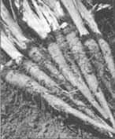

GARDEN HINTS
Three unusual candidates for early plantings, from seed to harvest.
These two root crops have a taste reminiscent of oysters.
Scorzonera hispanica, known as scorzonera, also called black salsify, black oyster plant, and viper's grass.
Tragopogon porrifolius , known as salsify, also called white salsify, oyster plant, and vegetable oyster.
Growing range: Throughout America.
History: Originating in the Mediterranean area, scorzonera and salsify were foraged and used by the ancient Romans as well as the Greeks. People never thought to cultivate them until sometime around the 1500s. They were then used for ornamental, medicinal, and culinary purposes. In the Middle Ages, scorzonera was considered a powerful tonic and snakebite cure - hence the name viper's grass. Salsify came to America in the 1700s and was at one time a popular root crop. When modern refrigeration and shipping techniques made the storage of perishable foods easy, salsify fell out of favor.
Appearance: Scorzonera, or black salsify, has a uniformly straight root that's covered with a charcoal or brown-gray, somewhat slippery skin. It usually grows longer, straighter, and smoother than salsify. The leaves look like a clump of coarse grass. With some varieties, the leaves are "cut and come again" greens that make a fresh addition to salads.
Salsify, or white salsify, has a root about the size of a large carrot. Bumpy like a parsnip, the salsify root has dirty-beige skin. The root looks a bit wilder than scorzonera and the leaves also look like a clump of grass. (Indeed, many people have weeded out young salsify or scorzonera and then wondered why their crop didn't germinate!) Both plants are biennials.
Scorzonera has an oyster-like taste. Salsify's flavor has been described as a cross between oysters and asparagus. Some people complain that salsify is blander, more fibrous, and harder to peel than scorzonera. Others remain loyal to salsify. Grow small plantings of both and decide for yourself.
Planting: Both plants are grown the same way. Sow seed as early in the spring as the ground can be worked. The frosts of spring and fall will only improve the roots' flavor, and salsify and scorzonera need at least 120 days to create good-sized tubers. In warm climates, you can plant about 4 months before the first frost or 3months before the onset of cool weather.
Work the soil until it's loose and rock-free at least a foot deep. Do not use fresh manure as it makes roots fork. Because potassium helps build healthy roots, wood ashes, granite, or greensand are good additions. The pH should be close to neutral (between 6.0 and 8.0).
Sow the seeds thickly, 1 inch deep in rows that are 12 to 15 inches apart, then thin the seedlings to about 4 inches apart. Or start the seeds in flats where they can get off to a good start without accidentally being weeded out, and then transplant. You can either let a few plants go to seed (this will happen the following spring) or buy new seed each year, but don't expect any unused seed to last for an extra year. It probably won't.
Culture: Salsify and scorzonera need little care. They are not as domesticated as most common root crops, so they are hardier and more self-sufficient. They seem to grow, out of sight and out of mind, until ready to harvest.
Pests: Virtually none.
Harvest: Both oyster plants definitely taste best fresh from the ground. They discolor and lose flavor quickly once dug; all fall, dig only what you need at the time. Be sure to dig deeply so you get the whole root without cutting it or it will "bleed."
Right before the ground freezes solid (if that happens in your area), dig what you will need for the harshest of winter and store in damp sand in a root cellar or outdoor pit with a lid. Cut off the tops of the remaining roots and mulch them heavily. When the soil thaws in spring, dig those last roots and store them in a dark place to prevent sprouting.
You should scrub the roots before cooking but it's best not to peel them. The skin can be rubbed off afterwards, if you prefer, but leave it on at least that long so it can contribute flavor and vitamins. Cover freshly cooked roots with a weak lemon juice or vinegar solution to avoid discoloration (unless they will be an ingredient in a soup, soufflé, or other dish where they will not be exposed to air). Both vegetables do not can or freeze well.
Uses: Salsify and scorzonera are often used to make mock oyster soup or chowder. They are also good steamed and served with butter or special sauces, fried, baked or braised with meats, and in stews, soups, soufflés and quiches.
Nutrition: A good source of calcium, iron, and phosphorus.
True to its name, this one offers two vegetables at once: the flavors of celery and lettuce.
Lactuca sativa var. asparagina , also called asparagus lettuce, stem lettuce, and Chinese lettuce.
Growing range: Most of the U.S. - wherever lettuce will grow.
History: Celtuce originated in China and is often called Chinese lettuce in seed catalogs. It was apparently first brought from China to America in 1940 by a returning missionary.
Appearance: The name, appearance, and taste are all combinations of celery and lettuce. First to appear are lettucy leaves: light green and elongated but not deeply wrinkled. Though soft in texture, these fresh greens stand up to heat, cold, and even salad dressing surprisingly well. The second growth is the celery-like stalk or base that looks somewhat like a stalk of broccoli with its leaves removed. A mature plant looks a little like a miniature tropical tree.
Planting: Celtuce tolerates a wide variety of soils. In fact, it does far better in clay soil than lettuce does. Of course, building your soil into good tilth and boosting its fertility with compost or aged manure will give you an even better crop.
This is one of those vegetables that gives you an excuse to garden early in the season. You can start seed as early as the ground can be worked. Plant seeds shallowly, as you would lettuce seeds, only 1/4-inch deep in rows 12 to 18 inches apart. Remember to water often. In fact, you may want to lay boards, burlap, etc., over the ground to help keep the top layer moist so your seeds won't dry out. Check daily, and remove the cover as soon as germination has begun.
Culture: You can start enjoying the lettucelike leaves about a month and a half after planting. If you plant your seeds fairly close together, you can make several thinnings - this will give you a much larger harvest for the same space. Besides, the young and tender leaves of the first growth taste the best. You can even sow the rows themselves two to three times closer than normal and thin out whole rows.
Continue to provide plenty of water. They grow quickly and will soon keep most weeds shaded out, though you may need to weed some while the crop is still young.
Pests: Chinese lettuce is much more resistant to pests than ordinary lettuce. Still, slugs, aphids, cutworms, or leafhoppers could bother your crop. To control slugs, handpick them at night, set ground-level saucers of beer for them to hide under (then collect them), or treat plants with diatomaceous earth or wormwood tea. A strong water spray, yellow sticky traps, ladybugs or diatomaceous earth should help control aphids. To stop cutworms, spray them with Bacillus thuringiensis, handpick them at night, or mulch plants with a rough material like oak leaves, crushed egg shells, or damp wood ashes. Or put a stiff collar (like a yogurt container with the bottom removed) around the plant. Limit leafhoppers by covering young plants with a spunbonded row cover or by dusting with pyrethrum or diatomaceous earth.
Harvest: In about 45 days you can begin the harvest of the "tuce" part of the celtuce. Pick the outer leaves to keep the center producing new ones. Celtuce leaves wilt quickly, so pick just before a meal or store in the refrigerator.
The leaves might develop a bitter, milky juice when broken, just like lettuce that's past its prime. This is usually while the stalk is being formed. Depending on your growing conditions, your leaf harvest may be short, with only young leaves being palatable, or quite long, with larger leaves tasting great too.
Eventually, about 3 months after planting, the "cel" part is ready to harvest. Pull whole plants and cut off the roots. Next, strip the leaves and then peel the outer skin (it also contains milky sap). The light green inner core is now ready to use whenever the crunch of celery is needed. Unpeeled stalks will keep in the refrigerator for about as long as celery would.
Uses: Both parts of celtuce can be enjoyed in salads, soups, stews, and sandwiches. They can also be stir-fried, sautéed with a sauce of your choice, or pureed. The stalks can be served with dip.
Nutrition: High in vitamin C - up to four times that of lettuce.
|
 Salsify is also known as vegetable oyser. |
Celtuce provides a season-long double harvest and a taste of both celery and lettuce. |
|